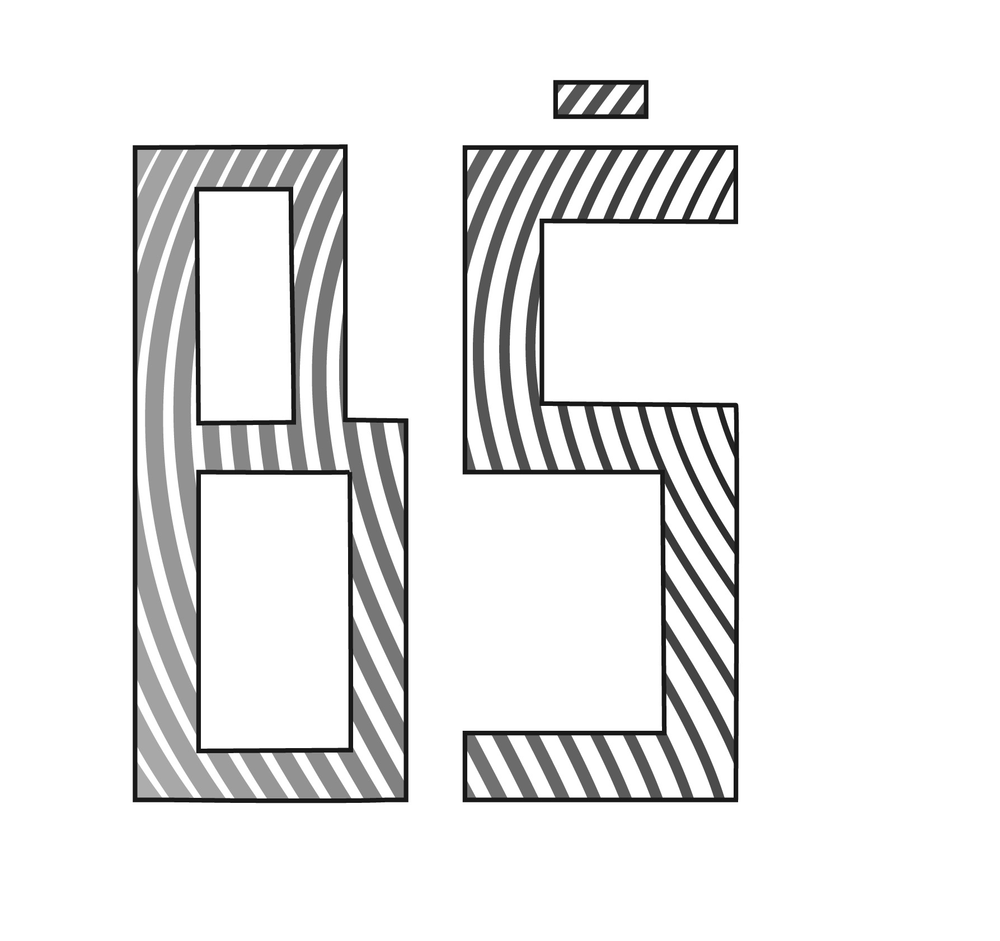

vježba 1 - izrada vlastitog fonta
Vježba 2 - izrada krivulja u vektorskom programu
Vježba 3 - izrada ilustracija u vektorskom programu
Vježba 4 - primjena gradijenta i transparencija u vektorskom programu
Projektni zadatak 1 - izrada plakata na temu morskog svijeta koristeći dosad naučene vještine
Vježba 5 - retuširanje fotografija, piksel grafika
Vježba 6 - koloriranje fotografija, piksel grafika
Vježba 7 - fotomontaža, piksel grafika
Projektni zadatak 2 - uređivanje fotografije korištenjem dosad naučenih vještina o piksel grafici
Vježba 8 - izrada kinemagrafa u GIF formatu


Vježba 9 - uređivanje videozapisa u mp4 formatu